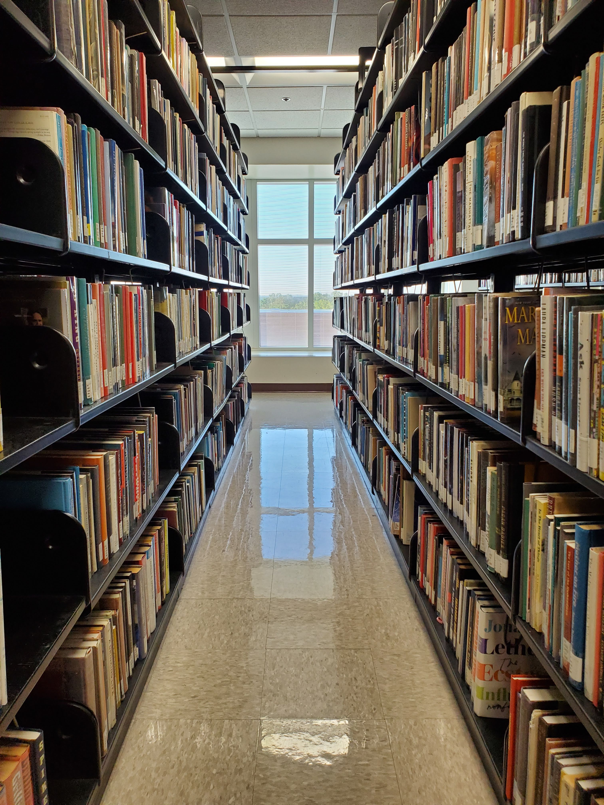

"Books are a uniquely portable magic." -Stephen King
If I could spend all day reading (and there are days that I do), I would. I've loved reading ever
since I
picked up my first Junie B. Jones book in first grade. It is a really great hobby. I'm constantly
expanding my vocabulary.
It always blows my mind that words on a piece of paper can make you laugh, cry, or cringe (when the
main character does something embarrassing).
Here is some information about the benefits of reading and how to get started if you're interested.
Hope you like them!
Best Times
There is never a wrong time to read. You can pick up a book at any time or any place. Sometimes I decide
to finish
a chapter and go to sleep. Next thing I know, it's 4 am and I would do it again! I'm the kind of person
who always has
a book in my bag, just in case. These are some of my
favorite times to read:
Rainy Weather
Something about rainy weather makes me need a hot mug of coffee and a good book. Maybe it's just me, but
the weather also tends to
influence the genre that I want to read. I prefer to read mysteries or thrillers when it's storming.
Vacation
I go through as many books as possible when I'm on vacation. It's very relaxing to sit on the beach
listening to the waves and read
Colleen Hoover's new book.
Reading on vacation
This picture is from my trip to the Smoky Mountains a couple years ago. I woke up really early to see the
sunrise and decided to
spend some time hearing the sounds of nature and reading a thriller by Mary Higgins Clark.
Where
There are many places where you can find books. It depends on whether you want a physical copy or would
prefer an ebook.
A lot of people like to use kindles to read. I prefer reading physical books, but if I can't get a hold
of one and I find an
ebook, I don't mind.

Library
Local libraries
I live in Harrisburg, NC, so the closest library to my house is the Cabarrus County Public Library. They
have a large collection of
books of every genre. Local library membership is free if you are a resident of the county. They also
have many ebooks that can be
accessed through an associated website.
Thrift Stores and Garage Sales
Yes, books aren't cheap and it really adds up when you go to a bookstore. I've gotten a lot of books for
lower costs
at garage sales and thrift stores. Second Look Books is a a second-hand book store that I go to often.
It is a small family run
business. It is also a great place to meet fellow bibliophiles.
Favorites
Genre
Title
Author
Mystery
The Guest List
Lucy Foley
Thriller
The Woman in the Window
A.J. Finn
Dystopian Fiction
Legend Series
Marie Lu
Fantasy
Throne of Glass Series
Sarah J. Maas
Romance
Archer's Voice
Mia Sheridan
Rachel's favorite books
Why
Benefits of Reading
Brain
Brain Stimualation
Just like your body, it is important to exercise your brain. Reading keeps your brain active and
stimulates it.
This will help improve your memory. It is known to slow down diseases like Dementia and Alheimer's. It
also improves
your vocabulary.
Stress Reduction
Reading is very relaxing and is a great stress reliever. When you pick up a book, you are transported to
a different world where all
your worries are nonexistent. Depending on what you're reading, you can also find good advice and
solutions to your problems.
About Me
Rachel and her dog
My name is Rachel William. I'm a junior at UNC Charlotte majoring in Computer Science with a
concentration in Data Science.
I was born and raised in a little town in California. I
moved to Charlotte a couple of years ago. I love to bake, hike, and go on walks with my dog.
One hobby that has stuck since I was a kid is
reading. I love visiting libraries and finding books at thrift stores. Book stores always test my self
control and I don't think I've ever left one without atleast one book in my hand.